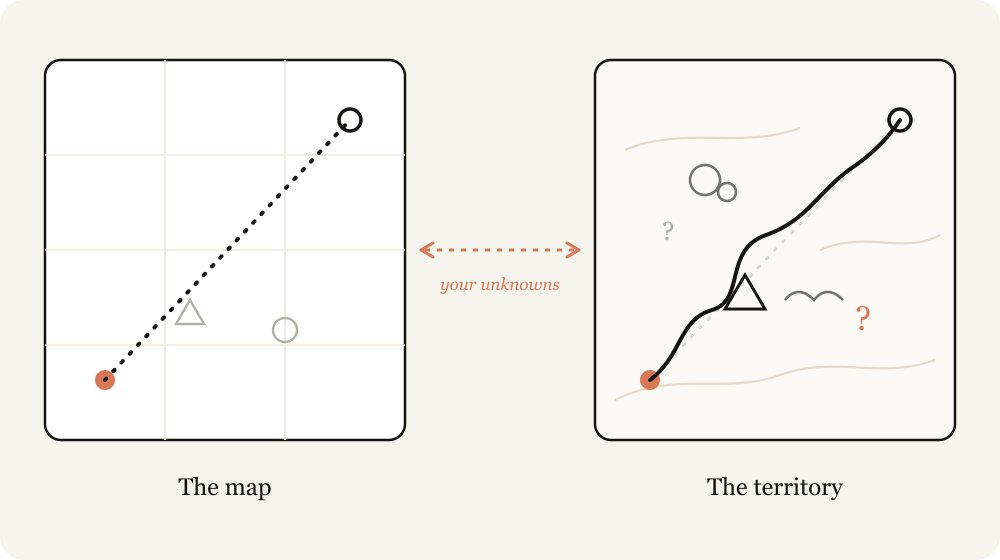
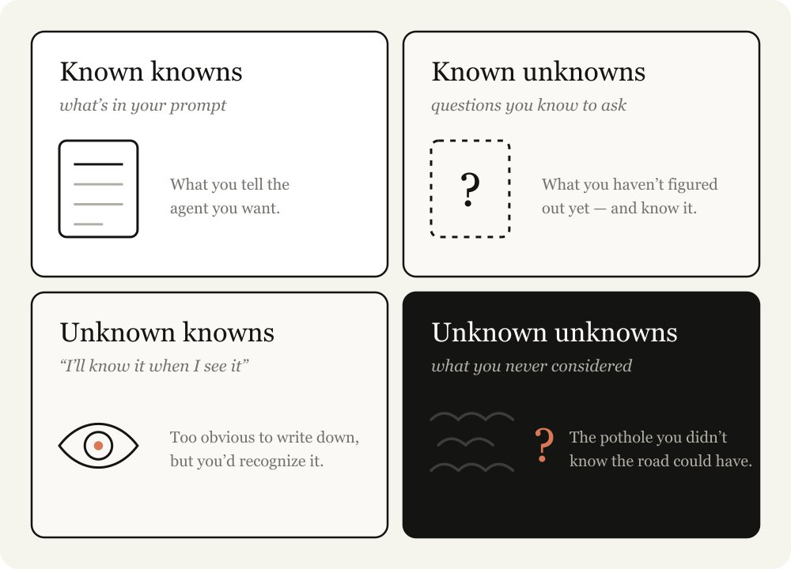
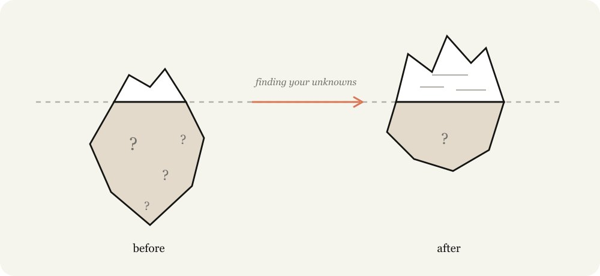
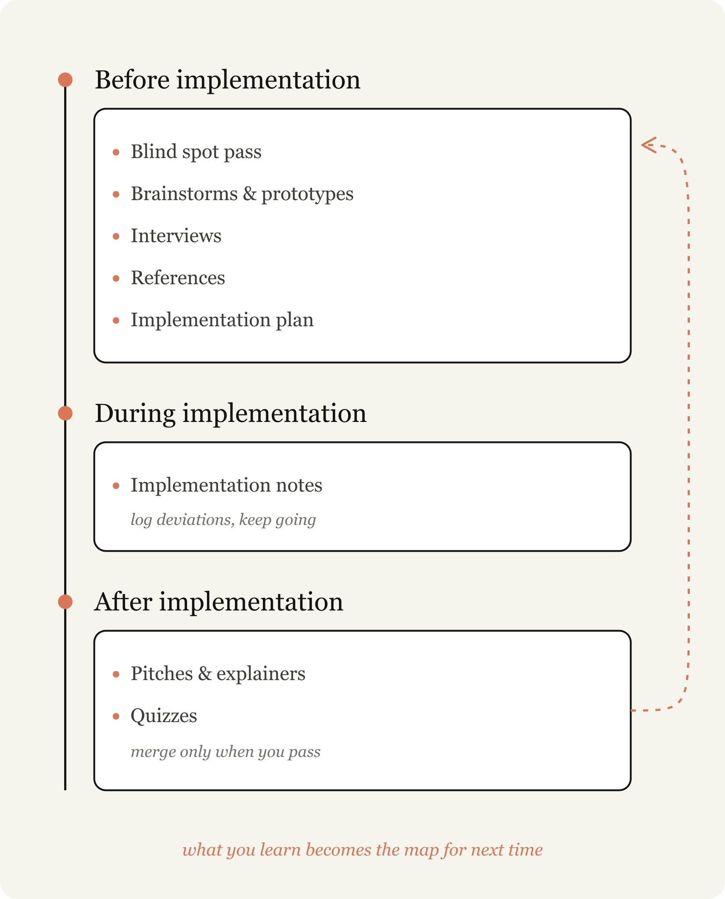
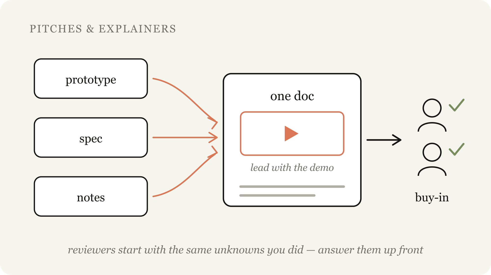

Figma 원본 기반 한국어 번역
Fable 현장 가이드: 내가 모르는 것을 찾는 법
원문 제목은 A Field Guide to Fable: Finding Your Unknowns다. 이 문서는 Figma 노드
27563:15684에서 추출한 본문을 한국어로 읽기 좋게 정리한 번역본이다.
important for로 끝난다. 이 번역은
임의로 원문을 보충하지 않고 그 상태를 표시한다.
지도는 영토가 아니다
Claude Fable 5와 함께 일하다 보면 오래된 교훈을 계속 다시 배우게 된다. 지도는 영토가 아니다.
여기서 지도란 해야 할 일을 나타낸 표현이다. 내가 Claude에게 주는 프롬프트, 스킬, 컨텍스트가 지도다. 반면 영토는 실제 일이 벌어지는 장소다. 코드베이스, 현실 세계, 그리고 실제 제약 조건이 여기에 해당한다.

지도와 영토 사이의 차이를 나는 unknowns, 즉 아직 모르는 것들이라고 부른다. Claude가 unknown을 만나면, 내가 원하는 것이 무엇인지 최선의 추측을 바탕으로 결정을 내려야 한다. 해야 할 일이 많을수록 Claude가 마주칠 수 있는 unknown도 많아진다.
Fable은 내가 작업 품질의 병목이 모델 자체가 아니라 그 unknowns를 얼마나 명확하게 해 주느냐에 있다는 점을 처음으로 강하게 느낀 모델이다.
중요한 점은, 미리 계획하는 것만으로는 항상 충분하지 않다는 것이다. unknown은 구현 깊숙한 곳에서 발견될 수도 있고, 발견된 unknown 때문에 사실은 전혀 다른 방식으로 문제를 풀어야 한다는 결론에 이를 수도 있다.
Fable과 일하는 과정은 구현 전, 구현 중, 구현 후에 내가 가진 unknowns를 계속 발견해 나가는 반복 과정에 가깝다.
글 안에는 unknowns를 찾기 위한 예시 산출물들이 들어 있다. 다만 어떤 상황에서 어떤 산출물을 써야 하는지에 대한 감각도 함께 익혀야 한다.
내가 모르는 것을 아는 법
문제가 있을 때 나는 내가 가진 unknowns를 네 가지로 나누어 본다.
- Known Knowns: 내가 이미 알고 있고 프롬프트에 적는 것. 에이전트에게 내가 원한다고 말하는 내용이다.
- Known Unknowns: 아직 알아내지 못했지만, 내가 모른다는 사실은 알고 있는 것.
- Unknown Knowns: 너무 당연해서 적지는 않지만, 보면 알아차릴 수 있는 것.
- Unknown Unknowns: 전혀 고려하지 못한 것. 내가 어떤 지식을 모른다는 사실조차 모르는 것. 어떤 결과물이 얼마나 좋아질 수 있는지도 모르는 상태다.

뛰어난 agentic coder들은 상대적으로 unknowns가 적다. Boris나 Jarred 같은 사람들이 프롬프트하는 모습을 보면, 그들은 원하는 것을 아주 구체적으로 알고 있다는 점이 분명하다. 코드베이스와 모델의 행동 양쪽 모두와 깊게 맞물려 있다.
하지만 그들도 unknowns가 있다는 점을 전제로 한다. 여러 면에서 unknowns를 줄이고, unknowns에 대비해 계획하는 것이 agentic coding의 핵심 역량이다. 다행히 이 역량은 Claude와 함께 일하면서 키울 수 있다.
Claude가 너를 더 잘 돕게 만들기

Claude에게 지시하는 일은 미묘한 균형이 필요하다. 너무 구체적으로 지시하면, 방향 전환이 더 적절한 상황에서도 Claude는 지시를 그대로 따른다. 너무 모호하게 지시하면, Claude는 일반적인 업계 관행을 바탕으로 선택하고 가정하는데, 그 선택이 지금 과제에는 맞지 않을 수 있다.
unknowns를 고려하지 않으면 두 방향 모두에서 실패한다. 어느 길에 장애물이 있을지, 어느 길이 깨끗하게 열려 있을지 알 수 없지만, 그래도 Claude가 상황에 맞게 방향을 틀기를 바라게 된다.
Claude는 네 unknowns를 더 빨리 발견하도록 도와줄 수 있다. Claude는 코드베이스와 인터넷을 매우 빠르게 검색할 수 있고, 평균적인 주제에 대해서는 너보다 훨씬 많이 알고 있다. 실패로부터 반복하는 속도도 더 빠르다.
이 과정에서 가장 중요한 것은 Claude에게 네 출발점에 대한 컨텍스트를 주는 것이다. 예를 들어 현재 네 사고 과정이 어디에 있는지, 이 문제와 코드베이스에 대해 어느 정도 경험이 있는지 말해라. 그리고 Claude가 사고 파트너처럼 함께 일하게 해라.
이전에도 Claude와 HTML을 함께 쓰는 방법에 대해 쓴 적이 있다. 거의 모든 경우에 HTML 산출물은 이런 내용을 시각화하고 표현하기에 가장 좋은 방식이다.
이 글에서는 unknowns를 드러내기 위해 내가 쓰는 패턴들을 정리한다. 매번 모든 기법을 쓰는 것은 아니지만, 가지고 있으면 유용한 기법 모음이다.

구현 전
Blind Spot Pass
일을 시작할 때 가장 유용한 것 중 하나는 내 blindspot을 이해하는 것이다. 예를 들어 코드베이스의 새로운 영역에 기능을 추가하거나, 디자인 반복처럼 익숙하지 않은 일을 Claude와 함께 하려 한다면 unknown unknowns가 많을 가능성이 높다.
어떤 질문을 해야 하는지, 좋은 결과물이 어떤 모습인지, 이전에 어떤 작업이 있었는지, 어떤 함정을 피해야 하는지 모를 수 있다.
이럴 때 Claude에게 내 unknown unknowns를 찾아 설명해 달라고 요청할 수 있다. 나는 실제로 “blindspot pass”와 “unknown unknowns”라는 표현을 그대로 쓰는 편이다. 내가 누구이고 무엇을 알고 있는지에 대한 컨텍스트를 주는 일은 보통 중요하다. Figma 원문은 여기서 문장이 끝난다.
예시 프롬프트
브레인스토밍과 프로토타입
보면 알 수 있지만 말로는 기준을 정의하기 어려운 unknown knowns가 많은 영역에서 일할 때, 나는 Claude에게 함께 브레인스토밍하고 프로토타입을 만들자고 요청한다.
unknown knowns를 프로토타입 초기에 식별하고 말로 표현하는 일은 매우 가치 있다. 구현 중에 그것을 발견하면 상대적으로 비용이 커질 수 있기 때문이다. 기능이나 스펙의 작은 변화도 코드에서는 크게 다른 구현으로 이어질 수 있고, 에이전트가 이전 변경을 되돌리기도 더 어려워질 수 있다.
예를 들어 백엔드 라우트를 연결하거나 프런트엔드 상태를 더 유지하지 않고, 프레임에 버튼 하나를 추가했을 때 어떻게 보이는지 보고 싶을 수 있다.
나에게 시각 디자인은 설명하기 어렵지만, 보면 원하는 것을 알 수 있는 영역이다. 이런 경우 나는 하나의 산출물에 대해 여러 디자인 접근안을 요청한다.
나는 거의 모든 코딩 세션을 탐색이나 브레인스토밍 단계로 시작한다. 이는 프로젝트 범위를 의도적으로 정의하며 출발하도록 돕는다. Claude는 내가 놓쳤을 고가치 접근을 찾아내기도 하고, 때로는 큰 그림을 놓치기도 한다. 브레인스토밍은 범위를 너무 좁거나 넓게 잡는 일을 막아 준다.
예시 프롬프트
인터뷰
충분히 브레인스토밍을 하고 나서도, 나는 여전히 unknowns를 가지고 있을 가능성이 높다.
이 경우 Claude에게 unknowns나 모호한 점에 대해 나를 인터뷰해 달라고 요청한다. Claude에게 인터뷰를 요청할 때는 질문의 방향을 잡을 수 있도록 문제에 대한 컨텍스트를 주는 것이 좋다.
레퍼런스
원하는 것을 자세히 설명할 수 없는 경우가 있다. 언어가 부족하거나, 너무 복잡해서 설명하는 데 꽤 오래 걸릴 수 있다.
이럴 때 가장 좋은 답은 레퍼런스다. 다이어그램, 문서, 이미지를 포함할 수도 있지만, 최고의 레퍼런스는 소스 코드다.
특정 방식으로 동작하는 라이브러리나 정말 좋아하는 디자인 컴포넌트가 있다면, 언어가 다르더라도 Fable에게 그 폴더를 가리키고 무엇을 봐야 하는지 말해라.
Claude Design도 같은 방식으로 작동한다. 파일을 직접 줄 필요는 없다. 물론 줘도 된다. 마음에 드는 웹사이트의 모듈을 가리키면, Claude는 스크린샷만 보는 것이 아니라 그 밑의 코드를 읽는다. 이 방식은 마크업, 구조, 컴포넌트가 실제로 어떻게 만들어졌는지에 대해 훨씬 풍부한 세부 정보를 제공한다.
vendor/rate-limiter는 내가 원하는 정확한 backoff 동작을 구현한다. 이것을 읽고 같은 의미론을
우리 TypeScript API client에 다시 구현해라.
구현 계획
구현할 준비가 됐다고 생각하면, 나는 Claude에게 검토용 구현 계획을 작성해 달라고 요청하는 편이다. 특히 바뀔 가능성이 높은 부분, 예를 들어 데이터 모델, 타입 인터페이스, UX 흐름을 중심으로 검토하게 한다. 이렇게 하면 Claude가 내가 실제로 바꿔야 할 수 있는 지점을 드러낼 수 있다.
구현 중
Implementation notes
계획에 만족하면 새 세션을 만들고, 필요한 산출물을 프롬프트에 넘긴다. 예를 들어 스펙 파일과 프로토타입을 넘긴 뒤 에이전트에게 구현을 요청할 수 있다.
하지만 아무리 많이 계획해도 unknown unknowns는 항상 숨어 있다. 에이전트는 작업 중 코드에서 발견한 엣지 케이스 때문에 다른 방향을 택해야 한다고 판단할 수 있다.
그래서 나는 Claude Code에게 임시 implementation-notes.md 또는 .html 파일을 유지해 달라고
요청한다. 그 안에는 에이전트가 내린 결정을 기록하고, 다음 시도에서 배울 수 있게 한다.
구현 후
피치와 설명 자료

무언가를 출시할 때 가장 중요한 부분 중 하나는 동의와 승인을 얻는 것이다. 최종 문서에 피치와 설명 산출물을 만드는 일은 다음을 돕는다.
- 리뷰어가 내가 처음 가졌던 것과 같은 unknowns에서 출발할 때 이해를 빠르게 만든다.
- 전문가가 예상했을 unknowns와 흔한 실패 지점을 고려했다는 점을 보고 싶어 할 때 승인을 빠르게 만든다.
퀴즈
긴 작업 세션이 끝나면 Claude가 내가 깨닫는 것보다 훨씬 많은 일을 해냈을 수 있다. 코드 diff를 읽는 것만으로는 무슨 일이 있었는지 가볍게 이해하는 데 그친다. 많은 동작은 기존 코드 경로에 의존하기 때문이다.
Claude에게 충분한 컨텍스트를 받은 뒤 변경 내용에 대해 나에게 퀴즈를 내 달라고 하면, 실제로 무슨 일이 벌어지는지 이해하는 데 도움이 된다. 나는 퀴즈를 완벽하게 통과한 뒤에만 merge한다.
이 모든 것이 모이는 방식: Fable 출시
Fable 출시 영상은 Claude Code가 전부 편집했다. 이는 나에게 새로운 영역이었고, 나는 결코 전문가가 아니다.
그래서 나는 내가 아는 것부터 시작했다. Claude가 코드를 사용해 영상을 편집하고 전사할 수 있다는 것은 알았지만, 그것이 충분히 정확한지는 확신하지 못했다. 그래서 Claude에게 Whisper 같은 전사 도구가 어떻게 작동하는지, ffmpeg를 사용해 “um” 같은 말이나 긴 침묵을 정확하게 잘라낼 수 있는지 설명해 달라고 했다.
나는 Claude가 내가 말하는 단어와 타이밍이 맞는 UI를 만들기를 원했다. 하지만 그게 가능한지 확신하지 못했기 때문에, Remotion과 전사 데이터를 사용해 프로토타입 영상을 만들어 실제로 작동하는지 확인해 달라고 했다.
마지막으로 영상 자체가 조금 흐릿하고 힘이 없어 보였는데, 나는 이것이 color grading의 결과라는 점은 알았지만 color grading이 무엇인지는 잘 몰랐다. 첫 시도에서는 Claude에게 몇 가지 variation을 만들게 하고 그중 하나를 고르려 했다. 하지만 color grading에서 “좋음”이 무엇인지 내가 모른다는 사실을 깨달았다. 그래서 대신 Claude에게 color grading을 가르쳐 달라고 요청해 내 unknowns를 발견했다.
그에 대한 더 자세한 설명은 여기에서 볼 수 있다.
지도와 영토를 맞추기
모델이 좋아질수록 올바른 접근 방식으로 더 많은 것을 해낼 수 있다. 긴 범위의 작업 결과가 틀리게 돌아왔다면, unknowns를 더 정의하거나 Claude가 그 unknowns를 지나며 즉흥적으로 조정할 수 있는 구현 계획을 만드는 데 더 많은 시간을 써야 할 가능성이 높다.
설명 자료, 브레인스토밍, 인터뷰, 프로토타입, 레퍼런스는 모두 값싼 방법이다. 나중에 고치기 비싸지기 전에 내가 무엇을 몰랐는지 알아내게 해 준다.
그러니 다음 프로젝트를 시작할 때는 Claude에게 네 unknowns를 찾도록 도와 달라고 요청해라.
짧게 정리하면
이 글의 핵심은 “좋은 에이전트 사용”이 단순히 긴 프롬프트를 쓰는 문제가 아니라는 점이다. 중요한 것은 내가 이미 아는 것, 모른다는 사실을 아는 것, 말로 설명하지 못하지만 보면 아는 것, 그리고 모른다는 사실조차 모르는 것을 계속 드러내는 일이다. Fable처럼 강한 모델일수록 결과 품질은 모델의 한계보다 사용자가 unknowns를 얼마나 잘 발견하고 정리하느냐에 더 크게 묶인다.